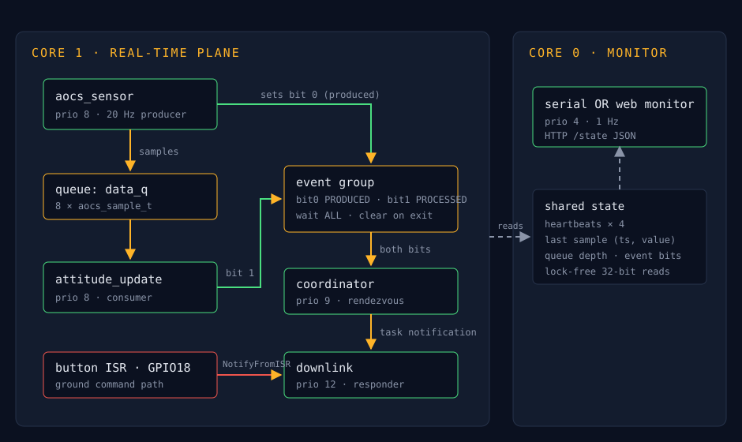

A 20 Hz attitude-sensor stream flows through a state machine and downlinks telemetry packets on demand — three FreeRTOS IPC primitives on one core, live HTTP observability on the other, and a measured answer for every design choice.
Three and a half minutes: the theme, the live pipeline, the timing evidence, and a fault injected on camera to show the degradation path working.
Core 1 is the real-time plane: producer → queue → consumer, an event-group rendezvous, and a notification-driven responder. Core 0 is the observability plane — it reads state through lock-free 32-bit variables, so watching the system never perturbs it.

Sized from first principles: 20 Hz producer × 400 ms worst-case consumer stall = 8 samples of burst headroom. Steady-state depth measured at 0.
The coordinator waits for PRODUCED and PROCESSED in one atomic call with clear-on-exit — no double-counted cycles, no partial-wake state a semaphore pair would allow.
1-to-1 signal into the responder's TCB, from a task or from the button ISR. Measured 15% faster than a binary semaphore on the full wake path.
Every number below was measured on the running system, with a validity check attached to each run — matched heartbeat counters for task-path runs, one sample per button press for ISR-path runs.
| Task | Period T | WCET C (measured max) | U = C/T | Priority | Deadline |
|---|---|---|---|---|---|
| aocs_sensor | 50 ms | 33 µs | 0.0007 | 8 | next period (50 ms) |
| attitude_update | 50 ms (event-driven) | 2011 µs | 0.0402 | 8 | before queue fills (400 ms) |
| coordinator | 50 ms (event-driven) | 2907 µs | 0.0581 | 9 | next cycle |
| downlink | 50 ms (event-driven) | 2855 µs | 0.0571 | 12 | next cycle |
| monitor (Core 0) | 1000 ms | — (non-critical plane) | — | 4 | soft |
Total utilization U = 0.156 against the rate-monotonic bound for 4 tasks (0.757) — comfortably schedulable with ~5× margin. Measured maxima are dominated by UART logging, and the coordinator's figure includes preemption by the higher-priority task it wakes — a conservative over-estimate, the safe direction for the claim.
| Path | Task notification | Binary semaphore |
|---|---|---|
| task → task | 35 µs avg / 36 µs max (n=1661) | 41 µs avg / 42 µs max (n=1921) |
| ISR → task | 16 µs avg / 17 µs max (n=56) | 17 µs avg / 18 µs max (n=61) |
Hazards identified per a MIL-STD-882E-style severity assessment, with each software mitigation mapped to NASA software-safety practice (NASA-GB-8719.13) — fault detection, annunciation, bounded resources, and independent command paths.
| ID | Hazard | Effect | Detection (in code) | Mitigation (in code) | Sev. | Practice mapping |
|---|---|---|---|---|---|---|
| H1 | Sensor task stall | Stale attitude data | Consumer 500 ms receive timeout; hb_prod frozen on monitor | Warning annunciated; last-known values held; pipeline keeps running | III | Fault detection & annunciation |
| H2 | Processing stall / queue overflow | Sample loss | Live queue depth on monitor; drop events logged with count | Queue bounded by analysis (20 Hz × 400 ms); log-and-drop preserves sampling cadence | III | Resource margins; overload management |
| H3 | Downlink automation failure | Loss of telemetry | hb_resp diverges from hb_coord — visible within 1 s | Independent ground-command path: button ISR → direct notification → downlink | II | Independent backup command path |
| H4 | Spurious command edges (bounce/EMI) | Command flood | Wake count vs. press count (validated during test) | ISR debounce gate; ms-scale gate specified for flight hardware | IV | Input signal conditioning |
| H5 | Monitor / network failure | Loss of observability only | Page stops refreshing; serial fallback available | Monitor isolated on Core 0 — cannot perturb the real-time plane | IV | Partitioning / isolation |
| H6 | Startup ordering race | Boot-loop crash | Found in test: notify on NULL handle asserted | Task creation order guarantees the responder handle exists before any signaler runs | II | Initialization ordering (found & fixed in test) |
The demo video injects hazard H3 live: the coordinator's notification is severed, killing the autonomous downlink. Watch the monitor tell the story.
[monitor] q_depth=0 evt=0x00 hb: prod=421 cons=421 coord=421 resp=380 ← resp frozen: fault detected [monitor] q_depth=0 evt=0x00 hb: prod=441 cons=441 coord=441 resp=380 ← pipeline alive, downlink dead *button press — manual ground command* [downlink] packet #381: rate=47 mdeg/s @ 22106 ms ← degraded-mode telemetry flows
Detection is passive (heartbeat divergence on the 1 Hz monitor), the fallback is an independent signal path that shares nothing with the failed one, and recovery is a rebuild away. The sample stream itself never stops — sensing, processing, and the rendezvous keep running throughout.
The complete engineering write-up — queue sizing math, back-pressure policy, event-group vs. semaphore analysis, measurement methodology including two failures found and fixed during testing — lives in the repository README.
Built for a flight-software / avionics firmware role: the emphasis is on defensible timing, a written hazard analysis, and failure modes that were induced and survived — not just features.
Every claim on this page traces to a log line: WCET maxima, wake latencies with sample counts, queue depth under injected overload.
A startup race exposed by a too-fast consumer (notify on a NULL handle), and a bounce-contaminated measurement caught by a press-count validity check. Both documented.
Dual-core pinning, queues, event groups, task notifications, GPIO ISRs, esp_timer, Wi-Fi STA + esp_http_server. Simulated in Wokwi.